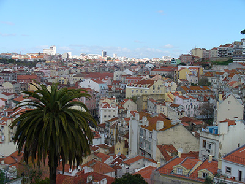

Lissabon

Lissabon fakta
Lissabon, portugisiska Lisboa, är huvudstad i Portugal. Lissabon har ungefär en halv miljon invånare i den centrala kommunen, och 2,8 miljoner invånare i hela storstadsområdet.
Lissabon är också centralort i Lissabons kommun och residensstad i Lissabons distrikt.
Lissabon har flera universitet och högskolor, nationalteater, opera och förnämliga museer, bland annat Gulbenkianmuseet för internationell konst, nationalmuseum för äldre portugisiskt måleri och ett museum som visar praktvagnar från 1500- och 1600-talen.
På Portugals "riviera", väster om Lissabon, ligger de populära badorterna Estoril och Cascais. I Estoril finns även Europas största kasino.
Historia
Lissabon var ursprungligen iberisk stad med namnet Olipsio. Det befästes senare av romarna och var operationsbas under Lusitanska kriget 138 f. Kr. och blev 45 f. Kr. municipium under namnet Felicitas Julia. Bland resterna från den romerska tiden märks en teater och termer. Vid mitten av 300-talet blev Lissabon ett viktigt biskopssäte. Under 400-talet erövrades Lissabon av alaner, sveber och visigoter.[1] 716 intogs staden av araberna, som kom att härska i Lissabon fram till 1147 då Alfons I av Portugal intog staden. 1256 blev Lissabon Portugals huvudstad. Under Portugals upptäcktsresor och koloniala expansion kom Lissabon att bli Europas största och viktigaste handelsstad, en position staden dock förlorade under den spanska ockupationen 1580-1640.[2]
Därefter började en ny uppblomstring fram till den för förödande jordbävningen 1 november 1755 då 2/3 av staden lades i ruiner och 20-30.000 människor omkom. Jordbävningen och Brasiliens självständighet i början av 1800-talet ledde till en period av ekonomiskt förfall, som Lissabon först i början av 1900-talet började återhämta sig från.[3]
Kultur